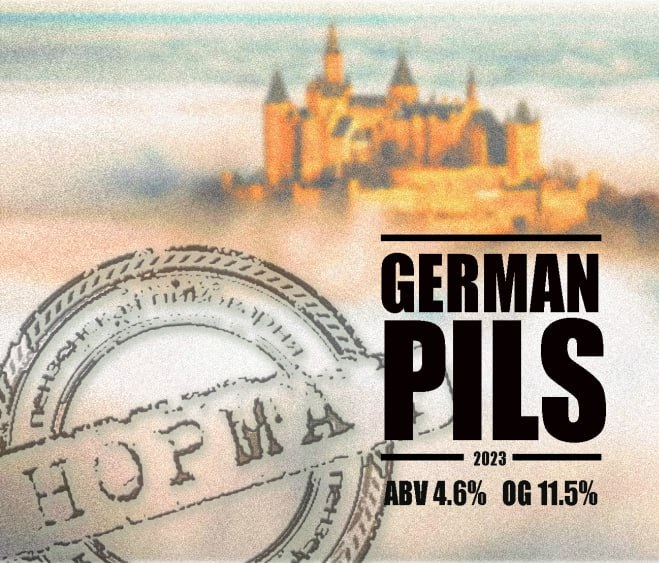
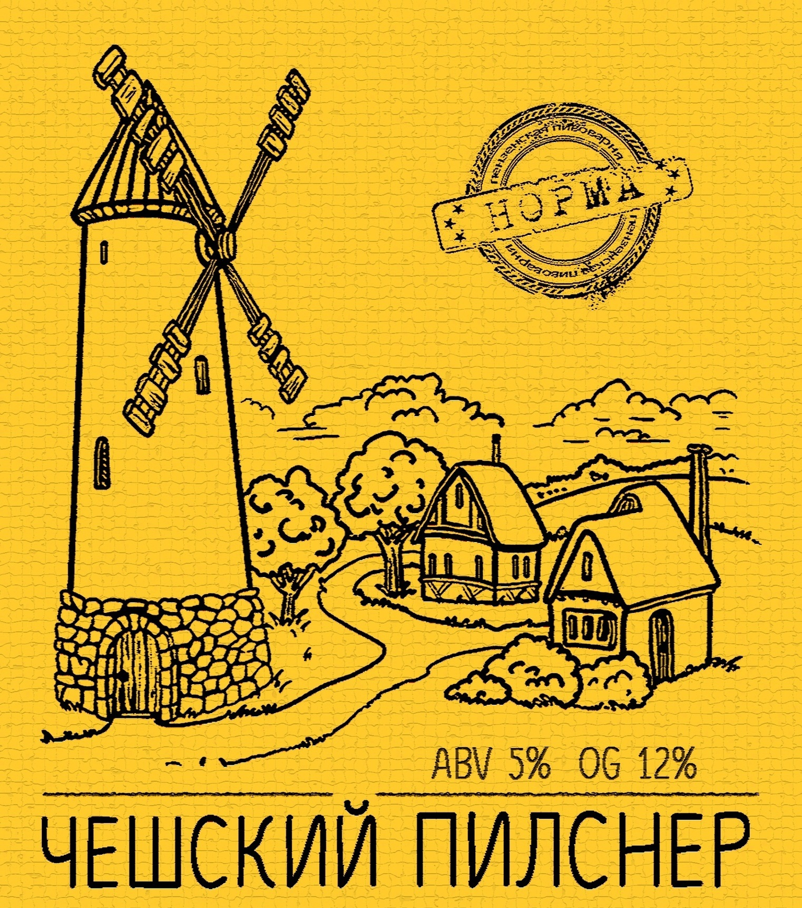
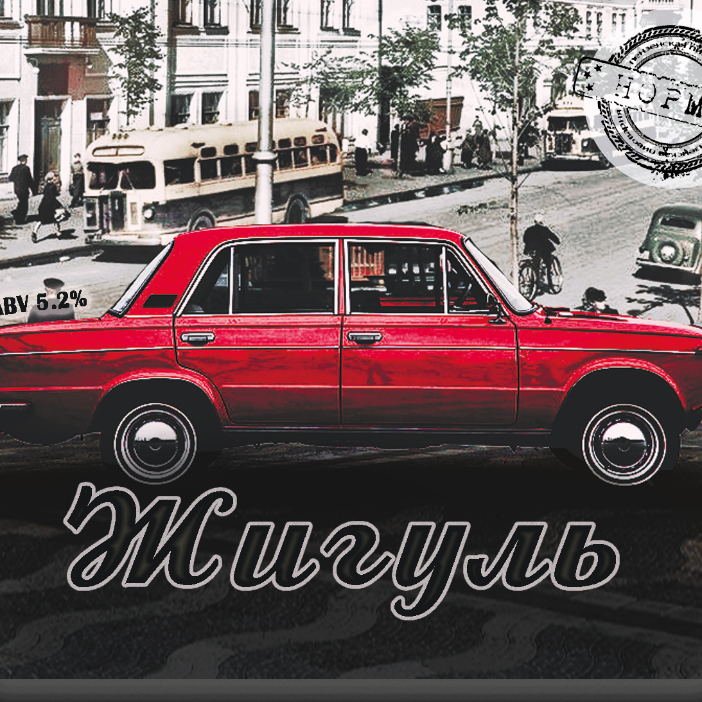
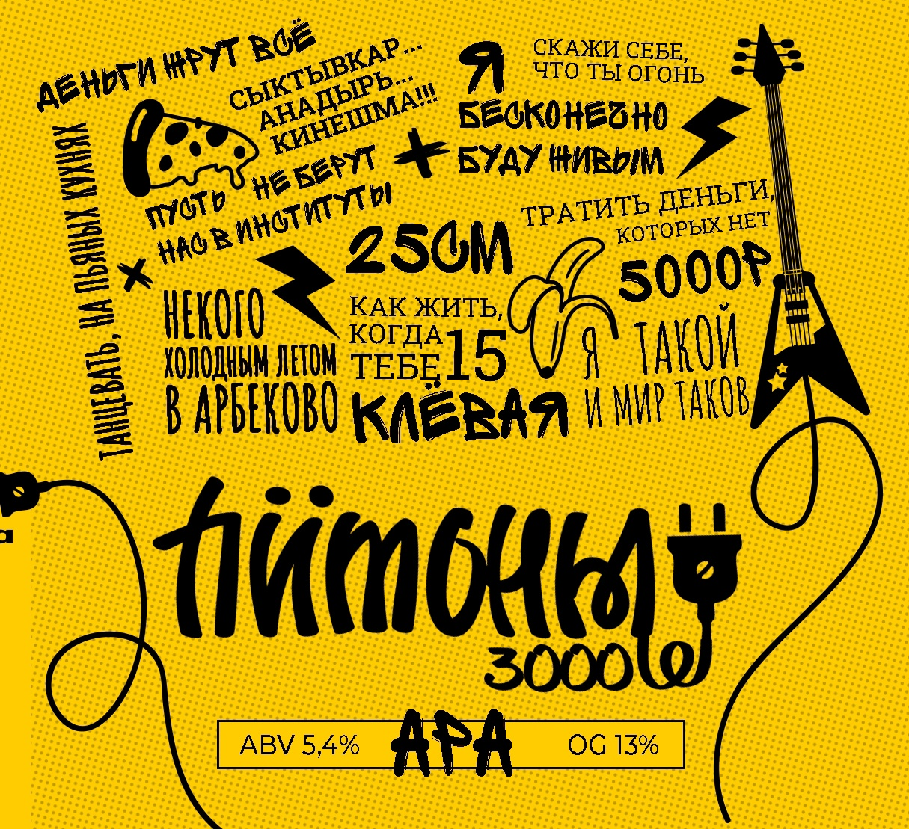

Мы создаём качественное и вкусное пиво, вдохновляясь традиционными стилями и смелыми экспериментами. Наша цель — не только удивлять ценителей пива, но и знакомить людей с искусством пивоварения, делиться нашей страстью и знаниями. Мы верим, что настоящее пиво — это сочетание мастерства, качественных ингредиентов и любви к своему делу. Каждая наша кружка — это приглашение в мир вкуса, традиций и инноваций
Наши сорта пива

GERMAN PILS (НЕМЕЦ)
Стиль: Немецкий Пилснер
Крепость: 4.5%
Плотность: 11.5%
Классический Немецкий Пилс характеризуется соломенным цветом и выраженным характером хмеля. Он хорошо выброжен и поэтому очень сухой, с освежающим финишем. Сильно карбонизирован. Обладает отчетливым хмельным ароматом, золотистым цветом и упругой пенкой.
Немецкий Пилс - это адаптированный чешский пилснер, приспособленный к условиям Германии, в частности, к воде с высоким содержанием минералов и местным разновидностям хмелей.

ЧЕШСКИЙ ПИЛСНЕР (ЧЕХ)
Стиль: Czech Pilsner
Крепость: 5%
Плотность: 12%
Чешский Пилс - это мягкий охмелённый светлый лагер с выраженным ароматом и вкусом хмеля, а также насыщенным солодовым вкусом. В нём больше цвета и тела, чем Немецком Пилснере. Чешский Пилс ощущается более сложным, солодовым и насыщенным в сравнении с Немецким.
Вода, используемая для чешского пилса, содержит очень мало минералов. Такая вода в сочетании с полным телом, с более «сильным» вкусовым профилем, даёт чешскому пиву более сбалансированный вкус, чем у сухих немецких версий.

ЖИГУЛЬ
Стиль: Светлый Лагер
Крепость: 5.2%
Плотность: 12.5%
Сварен методом двойного отварочного затирания. Такой метод позволяет извлечь выраженный солодовый вкус, золотой цвет и насыщенные карамельные ноты.
Чтобы добиться большей схожести с Жигулёвским пивом времен СССР, мы используем в заторе 30% кукурузы (затор — это смесь дроблёных зернопродуктов). Кукуруза придает пиву более выраженный аромат, а также добавляет сладости во вкусовой профиль.
Жигуль имеет насыщенный вкус, полное тело, высокую пеностойкость, золотистый цвет и ноты карамели.
Сурское
Стиль: Светлый Лагер
Крепость: 4%
Плотность: 9.6%
Лёгкий светлый евролагер. Самый лёгкий и питкий среди остальных сортов

Питоны 3000
Стиль: APA
Крепость: 5.4%
Плотность: 13%
American Pale Ale, охмеленный хмелями: Citra, Simkoe, Centennial, Amarillo, Mosaic, Фаворит, Подвязанный, Hercules
Наши партнеры